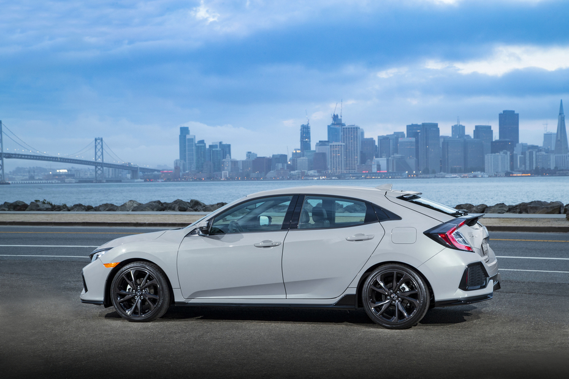

Este mini-site foi criado para comparar dois dos sedans turbo mais interessantes disponíveis no mercado brasileiro:
o Honda Civic Touring 2017, décima geração do icônico sedan japonês, e o
Mitsubishi Lancer Sportback Ralliart 2.0 Turbo 4x4 16V, um hatchback/sedan esportivo
com tração integral permanente derivada da tecnologia do lendário Lancer Evolution.
São propostas diferentes, públicos distintos e filosofias opostas. De um lado, o refinamento e a
eficiência do Civic. Do outro, a esportividade bruta e o DNA de rally do Lancer Ralliart.
Nas páginas a seguir, você encontrará fichas técnicas completas, tabelas comparativas, pontos fortes
e fracos de cada modelo, e poderá enviar sua opinião sobre qual carro prefere.
Os Competidores
Honda Civic Touring 2017 ✅

Honda Civic Touring 2017 — 10ª Geração
A décima geração do Honda Civic chegou ao Brasil em 2017 trazendo uma revolução no segmento de sedans médios.
A versão Touring é o topo de linha da família, equipada com motor 1.5 litro turbo de
173 cv e torque de 22,4 kgfm, câmbio CVT de última geração,
sistema Honda Sensing de segurança ativa e uma lista de equipamentos de primeira linha.
Com design aerodinâmico arrojado, interior amplo com porta-malas de 519 litros e consumo eficiente
(12 km/l na cidade e 14,6 km/l na estrada), o Civic Touring representa a escolha racional e sofisticada
para quem busca tecnologia, conforto e bom desempenho em um único pacote.
O Mitsubishi Lancer Sportback Ralliart é um hatchback esportivo de alto desempenho que
herda a tecnologia diretamente do icônico Lancer Evolution. Com motor 2.0 turbo de
250 cv, câmbio de dupla embreagem sequencial de 6 marchas (TC-SST) e
tração integral permanente 4x4 (S-AWC), o Ralliart é pura engenharia esportiva disfarçada
de carro do dia a dia.
Derivado direto da plataforma do Evo X, o Ralliart entrega 0 a 100 km/h em apenas 5,6 segundos
e velocidade máxima de 220 km/h, com estabilidade e aderência excepcionais em qualquer condição de piso.
É a escolha dos apaixonados por performance e pelo DNA de rally da Mitsubishi.
Motor: 2.0 Turbo 16V DOHC MIVEC
Potência: 250 cv a 6.000 rpm
Torque: 34,97 kgfm
Câmbio: TC-SST dupla embreagem 6 marchas
Tração: 4x4 integral permanente (S-AWC)
0 a 100 km/h: 5,6 segundos
Velocidade máxima: 220 km/h
O que você vai encontrar neste site
Navegue pelas páginas do menu para explorar todos os detalhes desta batalha entre os dois turbos:
Comparativo Detalhado —
Tabela técnica completa, pontos fortes e fracos, análise de desempenho, conforto e custo-benefício.